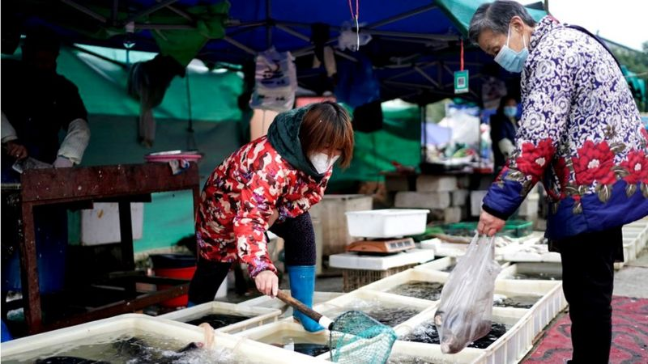

4 DATOS SOBRE EL ORIGEN DE LA PANDEMIA
1- La fuga de un laboratorio
En la conferencia de prensa, celebrada en Wuhan, el jefe de la misión internacional descartó la teoría de que el virus se hubiera filtrado de un laboratorio, un argumento en el que insistió el gobierno de Donald Trump sin presentar prueba alguna y que ha sido objeto de teorías de la conspiración.
En concreto, la administración Trump apuntó a la posibilidad de que el virus surgiera del Instituto de Virología de Wuhan, uno de los principales de China en el estudio de patógenos de nivel 4, que requieren el máximo grado de seguridad biológica, y que fue uno de los designados por las autoridades para analizar la secuencia del genoma del nuevo coronavirus.
Tras visitar este laboratorio y otros, Embarek destacó los "estrictos protocolos de seguridad" en este tipo de instalaciones y argumentó que antes de la aparición del virus "ninguna publicación científica ni ningún informe en ningún laboratorio del mundo" había hablado sobre él.
Las filtraciones de este tipo son "infrecuentes", remarcaron.
2- Murciélagos
El equipo de la OMS investigó cuatro fuentes potenciales del origen del contagio de SARS-CoV-2 a humanos:
~Transmisión directa de animal a humano
~Transmisión a través de un huésped animal intermedio (de animal a animal y luego a humanos)
~Transmisión por medio de algún alimento congelado de la cadena de frío
~Posible fuga de un laboratorio
"Los investigadores consideran que la más probable es la segunda opción y esta línea de investigación fue priorizada", informó el corresponsal de la BBC en China Stephen McDonell, que asistió a la rueda de prensa.
"Todo continúa señalando a una reservorio de este virus, o de un virus similar, en poblaciones de murciélagos", señaló Embarek.
No obstante, consideraron improbable que esto se encontrara en Wuhan. El equipo, por tanto, intentó encontrar "otras especies animales que pudieron contribuir a introducir el virus" en la urbe china, como huéspedes intermedios.
3- Cadena de frío
Pese a que la transmisión a través de un huésped animal intermedio "es la [causa] más probable y la que requerirá mas estudio e investigación", Embarek también consideró posible la transmisión por medio de algún alimento congelado de la cadena de frío, aunque dijo que no sabían mucho sobre ello.
El zoólogo explicó que el equipo había identificado a vendedores del mercado "mojado" de Huanan, al que se vincularon algunos de los primeros casos oficiales de covid-19 y en el que se vendían productos animales congelados, incluido animales salvajes.
"Así que tenemos el potencial de continuar esta pista e investigar la cadena de suministro y los animales que fueron distribuidos al mercado", recalcó.
Las autoridades chinas han atribuido los últimos rebrotes vividos en el país a los congelados importados del extranjero y a las personas venidas de otros países, sugiriendo que el virus pudo haberse originado en otra nación.
"Sabemos que el virus puede sobrevivir en condiciones que se encuentran en estos ambientes helados, fríos, pero en realidad no sabemos si el virus se puede transmitir a humanos" o en qué condiciones, precisó Embarek.
4- Antes de Huanan
El equipo de la OMS además reveló que no encontraron "grandes evidencias" de que el virus estuviera circulando en Wuhan antes de que se registraran los primeros casos en diciembre de 2019.
"Para entender el panorama de diciembre de 2019 nos embarcamos en una investigación muy detallada y profunda de otros casos que pudieron no haberse detectado, previos en 2019", explicó Embarek.
"Y la conclusión fue que no hallamos pruebas de grandes brotes que puedan estar relacionados con casos de covid-19 antes de diciembre de 2019 en Wuhan o en otro sitio", añadió.
No obstante, la viróloga holandesa Marion Koopmans explicó que eso no significa que no hubiera, informó el periodista de la BBC

Los primeros casos en la ciudad no se dieron solo en el mercado de Huanan, sino también "simultáneamente" en otros lugares no relacionados con aquel, de cuyo rastro no proporcionaron más detalles.
En ese sentido, Liang Wannian, el jefe del equipo de expertos chinos que investigó el SARS-CoV-2, señaló que el virus pudo circular antes en otra parte.
"En los dos meses previos a diciembre no hay pruebas de que estuviese en la ciudad", destacó Liang, apuntando a posibles fallos en la detección del virus en otras regiones.
Los expertos de la OMS consideraron por tanto que se debe ampliar el estudio y examinar muestras de sangre y reservorios de animales tanto en China como en otros países.
"El posible camino desde cualquier especie animal de origen hasta el mercado de Huanan pudo haber sido largo y convulso, incluyendo movimiento transfronterizo", dijo Embarek.